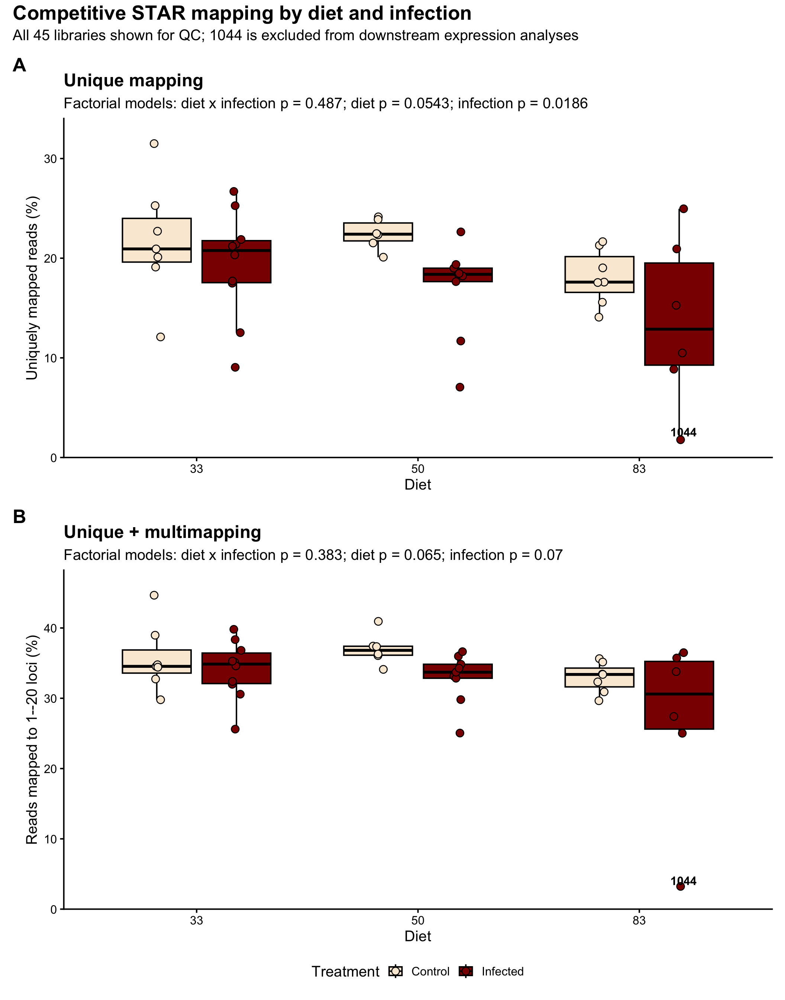
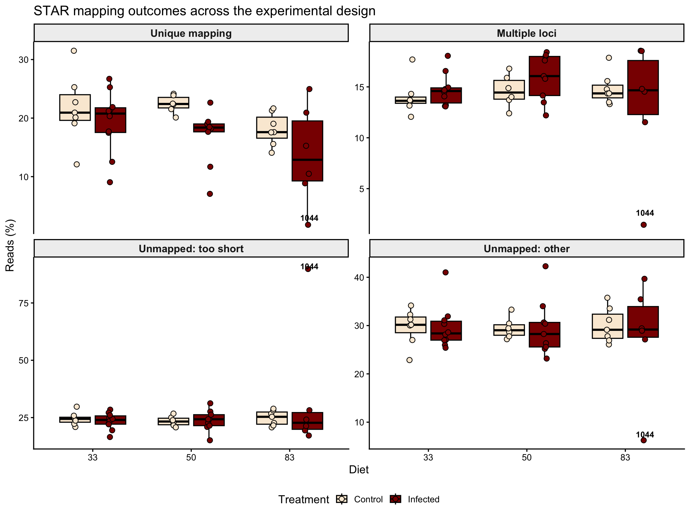
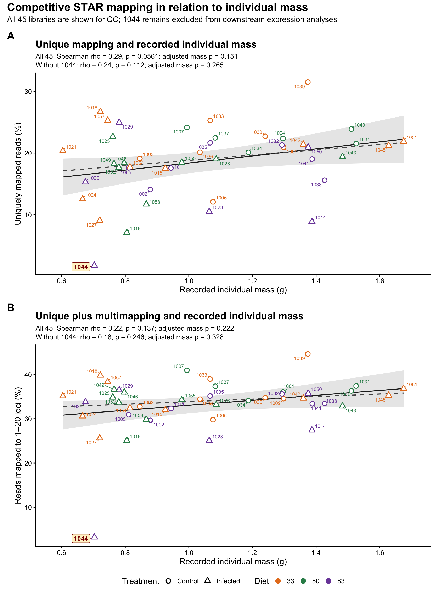

Count QC and exploration
Emily Baker and Maeva A. Techer
2026-08-10
Last updated: 2026-08-10
Checks: 6 1
Knit directory:
gregaria-diet-infection-interaction/
This reproducible R Markdown analysis was created with workflowr (version 1.7.2). The Checks tab describes the reproducibility checks that were applied when the results were created. The Past versions tab lists the development history.
The R Markdown file has unstaged changes. To know which version of
the R Markdown file created these results, you’ll want to first commit
it to the Git repo. If you’re still working on the analysis, you can
ignore this warning. When you’re finished, you can run
wflow_publish to commit the R Markdown file and build the
HTML.
Great job! The global environment was empty. Objects defined in the global environment can affect the analysis in your R Markdown file in unknown ways. For reproduciblity it’s best to always run the code in an empty environment.
The command set.seed(20260427) was run prior to running
the code in the R Markdown file. Setting a seed ensures that any results
that rely on randomness, e.g. subsampling or permutations, are
reproducible.
Great job! Recording the operating system, R version, and package versions is critical for reproducibility.
Nice! There were no cached chunks for this analysis, so you can be confident that you successfully produced the results during this run.
Great job! Using relative paths to the files within your workflowr project makes it easier to run your code on other machines.
Great! You are using Git for version control. Tracking code development and connecting the code version to the results is critical for reproducibility.
The results in this page were generated with repository version 20984df. See the Past versions tab to see a history of the changes made to the R Markdown and HTML files.
Note that you need to be careful to ensure that all relevant files for
the analysis have been committed to Git prior to generating the results
(you can use wflow_publish or
wflow_git_commit). workflowr only checks the R Markdown
file, but you know if there are other scripts or data files that it
depends on. Below is the status of the Git repository when the results
were generated:
Ignored files:
Ignored: .DS_Store
Ignored: analysis/.Rhistory
Ignored: analysis/output/
Ignored: code/R_timecourse_reference/
Ignored: code/scripts/__pycache__/
Ignored: data/.DS_Store
Ignored: data/raw_read_counts/DESeq2_output/overlap_DEGs/
Ignored: data/reference/
Ignored: output/.DS_Store
Ignored: output/archive/rmd_runs_20260809_navigation_cleanup/curated-target-gene-figure_20260808-001351/
Ignored: output/rmd_runs/
Ignored: output/runs/
Ignored: outputs/.DS_Store
Ignored: scripts/.RData
Ignored: scripts/.Rhistory
Ignored: scripts/manuscript/__pycache__/
Untracked files:
Untracked: data/metadata/mehreen_predissection_mass_45.tsv
Untracked: output/archive/rmd_runs_20260809_navigation_cleanup/exon-only-deseq2-analysis_20260808-020715/placed_unplaced_all_deseq2_results.csv
Untracked: output/archive/rmd_runs_20260809_navigation_cleanup/exon-only-deseq2-analysis_20260808-022116/placed_unplaced_all_deseq2_results.csv
Untracked: output/archive/rmd_runs_20260809_navigation_cleanup/placed-unplaced-scaffold-analysis_20260806-010555/placed_unplaced_all_deseq2_results.csv
Unstaged changes:
Modified: analysis/03-count-qc-exploration.Rmd
Note that any generated files, e.g. HTML, png, CSS, etc., are not included in this status report because it is ok for generated content to have uncommitted changes.
These are the previous versions of the repository in which changes were
made to the R Markdown
(analysis/03-count-qc-exploration.Rmd) and HTML
(docs/03-count-qc-exploration.html) files. If you’ve
configured a remote Git repository (see ?wflow_git_remote),
click on the hyperlinks in the table below to view the files as they
were in that past version.
| File | Version | Author | Date | Message |
|---|---|---|---|---|
| Rmd | 20984df | Maeva TECHER | 2026-08-10 | remove 1044 as bad mapping |
| html | 20984df | Maeva TECHER | 2026-08-10 | remove 1044 as bad mapping |
| Rmd | 8b8101c | Maeva TECHER | 2026-08-09 | fixing sample misassignement and missing library |
| html | 8b8101c | Maeva TECHER | 2026-08-09 | fixing sample misassignement and missing library |
| html | 0942a37 | Maeva TECHER | 2026-08-07 | update publication |
| Rmd | 9779d0d | Maeva TECHER | 2026-08-06 | reformat the pages |
| html | 9779d0d | Maeva TECHER | 2026-08-06 | reformat the pages |
| html | 5ebe940 | Maeva TECHER | 2026-08-06 | changes analysis |
| html | 1b24ec2 | Maeva TECHER | 2026-07-16 | adding phase related changes |
| html | bceb79b | Maeva TECHER | 2026-07-04 | update outliers removal |
| html | fb64139 | Maeva TECHER | 2026-07-03 | fixed the repo broken link |
| Rmd | 4de8698 | Maeva TECHER | 2026-07-03 | update html |
| html | 4de8698 | Maeva TECHER | 2026-07-03 | update html |
| Rmd | 4ef2181 | Maeva TECHER | 2026-07-03 | Upgrading analysis and figures DEGs |
| html | 4ef2181 | Maeva TECHER | 2026-07-03 | Upgrading analysis and figures DEGs |
Purpose
Step 1 - Define the cohort
Retain all valid libraries except 1044, whose alignment profile is documented below as a supplementary QC exclusion.
Step 2 - Explore samples
Use library depth, PCA, and sample distances to describe variation.
Step 3 - Interpret QC
Identify unusual libraries without excluding them from the main analysis.
This page checks count depth, low-count filtering, sample clustering, and PCA before differential expression models are interpreted. These checks are not a separate biological result; they are the audit trail that tells us whether the diet and infection contrasts are being estimated from comparable samples or whether a small number of unusual libraries could dominate the model.
Setup and data loading
The count matrix and metadata are matched by sample label before any plotting. This small bookkeeping step is important because RNA-seq models assume that the columns of the count matrix and the rows of the metadata describe the same samples in the same order.
knitr::opts_chunk$set(message = FALSE, warning = FALSE)
required <- c("DESeq2", "ggplot2", "ggrepel", "patchwork", "pheatmap", "scales")
missing <- required[!vapply(required, requireNamespace, logical(1), quietly = TRUE)]
if (length(missing) > 0) {
stop("Install required packages before knitting: ", paste(missing, collapse = ", "))
}
project_dir <- normalizePath(".", mustWork = TRUE)
run_stamp <- format(Sys.time(), "%Y%m%d-%H%M%S")
out_dir <- file.path(project_dir, "output", "rmd_runs",
paste(params$output_tag, run_stamp, sep = "_"))
dir.create(out_dir, recursive = TRUE, showWarnings = FALSE)
metadata <- read.delim(file.path(project_dir, params$metadata_file),
check.names = FALSE)
metadata$label <- as.character(metadata$label)
metadata$Diet <- factor(metadata$Diet, levels = c("33", "50", "83"))
metadata$Treatment <- factor(metadata$Treatment, levels = c("Control", "Infected"))
mapping_metadata <- read.delim(
file.path(project_dir, params$metadata_full_file),
check.names = FALSE
)
mapping_metadata$label <- as.character(mapping_metadata$label)
mapping_metadata$Diet <- factor(mapping_metadata$Diet, levels = c("33", "50", "83"))
mapping_metadata$Treatment <- factor(
mapping_metadata$Treatment,
levels = c("Control", "Infected")
)
mass_metadata <- read.delim(
file.path(project_dir, params$mass_file),
check.names = FALSE,
colClasses = c(label = "character", mass_g = "numeric")
)
stopifnot(
nrow(mass_metadata) == 45L,
!anyDuplicated(mass_metadata$label),
!anyNA(mass_metadata$mass_g),
setequal(mass_metadata$label, mapping_metadata$label)
)
counts_raw <- read.delim(file.path(project_dir, params$counts_file),
check.names = FALSE)
counts <- as.matrix(counts_raw[, -1])
rownames(counts) <- counts_raw[[1]]
storage.mode(counts) <- "integer"
count_labels <- sub("_MERGE$", "", sub("^mehreen_", "", colnames(counts)))
metadata <- metadata[match(count_labels, metadata$label), ]
stopifnot(identical(metadata$label, count_labels))
rownames(metadata) <- metadata$label
colnames(counts) <- count_labelsLibrary size
Library size is the first check because very low-depth samples can have noisy gene estimates even when their biological label is correct. Here we compare the total assigned counts across diet and infection groups, looking for samples that fall far outside the rest of their condition.
library(ggplot2)
library_size <- data.frame(
label = metadata$label,
total_counts = colSums(counts),
Diet = metadata$Diet,
Treatment = metadata$Treatment
)
ggplot(library_size, aes(x = interaction(Diet, Treatment),
y = total_counts,
color = Treatment)) +
geom_boxplot(outlier.shape = NA) +
geom_jitter(width = 0.12, height = 0, size = 2) +
scale_y_continuous(labels = scales::comma) +
theme_classic() +
labs(
title = "Total assigned counts per sample",
x = "Diet and treatment",
y = "Total counts",
color = "Treatment"
)
write.csv(library_size, file.path(out_dir, "library_size.csv"),
row.names = FALSE)Mapping quality across diet and infection
The competitive STAR alignment provides a second library-level check that is independent of the host gene-count totals. Here, “unique mapping” means that a read mapped to one position in the combined locust–Metarhizium reference. It does not mean that the read mapped specifically to the fungus. STAR’s “too short” category means that too little of the read aligned with sufficient score; it does not necessarily mean that the original FASTQ read was physically short.
The first figure compares two definitions in vertically stacked panels. Panel A uses only reads with one accepted genomic location. Panel B adds reads that STAR aligned to 2–20 locations. Reads assigned to more than 20 loci remain excluded from Panel B. The following four-panel graph separates the main STAR outcomes. Every library is shown in this supplementary QC record, and 1044 is labeled because its mapping profile is visibly different from the remaining samples. Sample 1044 is excluded from the expression analyses that follow.
star_dirs <- file.path(
project_dir,
c(params$main_competitive_star_dir,
params$sample_1044_competitive_star_dir)
)
star_logs <- unlist(lapply(
star_dirs,
list.files,
pattern = "_Log.final.out$",
full.names = TRUE
))
read_star_metric <- function(path, metric) {
lines <- readLines(path, warn = FALSE)
matched <- lines[grepl(metric, lines, fixed = TRUE)]
if (length(matched) != 1) {
stop("Expected one STAR metric '", metric, "' in ", path)
}
value <- trimws(strsplit(matched, "|", fixed = TRUE)[[1]][2])
as.numeric(gsub("%", "", value, fixed = TRUE))
}
mapping_qc <- data.frame(
label = sub("_Log.final.out$", "", basename(star_logs)),
input_reads = vapply(
star_logs, read_star_metric, numeric(1), metric = "Number of input reads"
),
unique_pct = vapply(
star_logs, read_star_metric, numeric(1), metric = "Uniquely mapped reads %"
),
multimapped_pct = vapply(
star_logs, read_star_metric, numeric(1),
metric = "% of reads mapped to multiple loci"
),
unmapped_short_pct = vapply(
star_logs, read_star_metric, numeric(1),
metric = "% of reads unmapped: too short"
),
unmapped_other_pct = vapply(
star_logs, read_star_metric, numeric(1),
metric = "% of reads unmapped: other"
),
stringsAsFactors = FALSE
)
stopifnot(setequal(mapping_qc$label, mapping_metadata$label))
mapping_qc <- mapping_qc[match(mapping_metadata$label, mapping_qc$label), ]
mapping_qc$Diet <- mapping_metadata$Diet
mapping_qc$Treatment <- mapping_metadata$Treatment
mapping_qc$unique_plus_multimapped_pct <-
mapping_qc$unique_pct + mapping_qc$multimapped_pct
test_mapping_design <- function(data, metric, mapping_definition, scenario) {
data$mapping_logit <- qlogis(
pmin(pmax(data[[metric]] / 100, 1e-6), 1 - 1e-6)
)
interaction_model <- stats::lm(mapping_logit ~ Diet * Treatment, data = data)
interaction_test <- stats::drop1(
interaction_model,
scope = ~ Diet:Treatment,
test = "F"
)
additive_model <- stats::lm(mapping_logit ~ Diet + Treatment, data = data)
main_tests <- stats::drop1(additive_model, test = "F")
data.frame(
mapping_definition = mapping_definition,
scenario = scenario,
samples = nrow(data),
interaction_p = interaction_test["Diet:Treatment", "Pr(>F)"],
diet_p = main_tests["Diet", "Pr(>F)"],
infection_p = main_tests["Treatment", "Pr(>F)"],
stringsAsFactors = FALSE
)
}
format_test_line <- function(test_row) {
paste0(
"Factorial models: diet x infection p = ",
format.pval(test_row$interaction_p, digits = 3, eps = 0.001),
"; diet p = ", format.pval(test_row$diet_p, digits = 3, eps = 0.001),
"; infection p = ", format.pval(test_row$infection_p, digits = 3, eps = 0.001)
)
}
mapping_figure_tests <- rbind(
test_mapping_design(mapping_qc, "unique_pct", "Unique mapping", "All 45 libraries"),
test_mapping_design(
mapping_qc,
"unique_plus_multimapped_pct",
"Unique + multimapping",
"All 45 libraries"
)
)
treatment_colors <- c(Control = "#FAEBD7", Infected = "#8B0000")
point_position <- ggplot2::position_jitterdodge(
jitter.width = 0.10,
dodge.width = 0.72,
seed = 33
)
make_mapping_design_plot <- function(data, metric, title, y_label, test_row) {
plot_data <- data
plot_data$mapping_percentage <- plot_data[[metric]]
ggplot2::ggplot(
plot_data,
ggplot2::aes(x = Diet, y = mapping_percentage, fill = Treatment)
) +
ggplot2::geom_boxplot(
position = ggplot2::position_dodge(width = 0.72),
width = 0.62,
outlier.shape = NA,
color = "black"
) +
ggplot2::geom_point(
shape = 21,
size = 3.2,
position = point_position,
color = "black"
) +
ggplot2::geom_text(
data = plot_data[plot_data$label == "1044", ],
ggplot2::aes(label = label),
position = ggplot2::position_nudge(x = 0.20, y = 0.8),
size = 4.2,
fontface = "bold",
inherit.aes = TRUE
) +
ggplot2::scale_fill_manual(values = treatment_colors) +
ggplot2::scale_y_continuous(
limits = c(0, NA),
expand = ggplot2::expansion(mult = c(0, 0.08))
) +
ggplot2::theme_classic(base_size = 15) +
ggplot2::theme(
legend.position = "bottom",
plot.title = ggplot2::element_text(face = "bold")
) +
ggplot2::labs(
title = title,
subtitle = format_test_line(test_row),
x = "Diet",
y = y_label,
fill = "Treatment"
)
}
p_mapping_unique <- make_mapping_design_plot(
mapping_qc,
"unique_pct",
"Unique mapping",
"Uniquely mapped reads (%)",
mapping_figure_tests[1, ]
)
p_mapping_unique_plus_multi <- make_mapping_design_plot(
mapping_qc,
"unique_plus_multimapped_pct",
"Unique + multimapping",
"Reads mapped to 1--20 loci (%)",
mapping_figure_tests[2, ]
)
p_mapping_comparison <-
p_mapping_unique / p_mapping_unique_plus_multi +
patchwork::plot_layout(guides = "collect") +
patchwork::plot_annotation(
tag_levels = "A",
title = "Competitive STAR mapping by diet and infection",
subtitle = "All 45 libraries shown for QC; 1044 is excluded from downstream expression analyses",
theme = ggplot2::theme(
plot.title = ggplot2::element_text(size = 20, face = "bold"),
plot.subtitle = ggplot2::element_text(size = 15)
)
) &
ggplot2::theme(
legend.position = "bottom",
plot.tag = ggplot2::element_text(size = 19, face = "bold")
)
print(p_mapping_comparison)
| Version | Author | Date |
|---|---|---|
| 20984df | Maeva TECHER | 2026-08-10 |
mapping_plot_exports <- list(
competitive_unique_mapping_by_design = p_mapping_unique,
competitive_unique_plus_multimapping_by_design = p_mapping_unique_plus_multi,
competitive_unique_vs_multimapping_by_design = p_mapping_comparison,
figureS3_mapping_quality_exclusion_1044 = p_mapping_comparison
)
mapping_plot_dimensions <- list(
competitive_unique_mapping_by_design = c(11, 6),
competitive_unique_plus_multimapping_by_design = c(11, 6),
competitive_unique_vs_multimapping_by_design = c(11, 14),
figureS3_mapping_quality_exclusion_1044 = c(11, 14)
)
for (plot_name in names(mapping_plot_exports)) {
dimensions <- mapping_plot_dimensions[[plot_name]]
for (extension in c("png", "pdf", "svg")) {
ggplot2::ggsave(
file.path(out_dir, paste0(plot_name, ".", extension)),
mapping_plot_exports[[plot_name]],
width = dimensions[1],
height = dimensions[2],
dpi = 320
)
}
}mapping_metrics <- c(
unique_pct = "Unique mapping",
multimapped_pct = "Multiple loci",
unmapped_short_pct = "Unmapped: too short",
unmapped_other_pct = "Unmapped: other"
)
mapping_long <- do.call(rbind, lapply(names(mapping_metrics), function(metric) {
data.frame(
label = mapping_qc$label,
Diet = mapping_qc$Diet,
Treatment = mapping_qc$Treatment,
metric = mapping_metrics[[metric]],
percentage = mapping_qc[[metric]],
stringsAsFactors = FALSE
)
}))
mapping_long$metric <- factor(mapping_long$metric,
levels = unname(mapping_metrics))
p_mapping_outcomes <- ggplot2::ggplot(
mapping_long,
ggplot2::aes(x = Diet, y = percentage, fill = Treatment)
) +
ggplot2::geom_boxplot(
position = ggplot2::position_dodge(width = 0.72),
width = 0.62,
outlier.shape = NA,
color = "black"
) +
ggplot2::geom_point(
shape = 21,
size = 2.7,
position = point_position,
color = "black"
) +
ggplot2::geom_text(
data = mapping_long[mapping_long$label == "1044", ],
ggplot2::aes(label = label),
position = ggplot2::position_nudge(x = 0.20, y = 1.2),
size = 3.6,
fontface = "bold"
) +
ggplot2::facet_wrap(~ metric, ncol = 2, scales = "free_y") +
ggplot2::scale_fill_manual(values = treatment_colors) +
ggplot2::theme_classic(base_size = 14) +
ggplot2::theme(
legend.position = "bottom",
strip.background = ggplot2::element_rect(fill = "grey94", color = "black"),
strip.text = ggplot2::element_text(face = "bold", size = 13)
) +
ggplot2::labs(
title = "STAR mapping outcomes across the experimental design",
x = "Diet",
y = "Reads (%)",
fill = "Treatment"
)
print(p_mapping_outcomes)
| Version | Author | Date |
|---|---|---|
| 20984df | Maeva TECHER | 2026-08-10 |
for (extension in c("png", "pdf", "svg")) {
ggplot2::ggsave(
file.path(out_dir, paste0("competitive_mapping_outcomes_by_design.", extension)),
p_mapping_outcomes,
width = 12,
height = 9,
dpi = 320
)
}
write.csv(mapping_qc,
file.path(out_dir, "competitive_mapping_quality_all_45_samples.csv"),
row.names = FALSE)Does mapping quality differ with diet or infection?
Because percentages are bounded between 0 and 100, each mapping proportion is logit-transformed before fitting the factorial model. Unique mapping and unique plus multimapping are tested separately. We first test the diet-by-infection interaction. Since neither interaction is supported, the diet and infection terms are then tested in additive models. The all-library rows provide the formal tests printed on the supplementary figure. The rows without 1044 describe the final biological analysis cohort.
mapping_definitions <- c(
unique_pct = "Unique mapping",
unique_plus_multimapped_pct = "Unique + multimapping"
)
mapping_model_results <- do.call(rbind, lapply(
names(mapping_definitions),
function(metric) {
rbind(
test_mapping_design(
mapping_qc,
metric,
mapping_definitions[[metric]],
"All 45 libraries shown for QC"
),
test_mapping_design(
mapping_qc[mapping_qc$label != "1044", ],
metric,
mapping_definitions[[metric]],
"Final 44-sample analysis cohort"
)
)
}
))
mapping_summary_long <- do.call(rbind, lapply(
names(mapping_definitions),
function(metric) {
data.frame(
mapping_definition = mapping_definitions[[metric]],
Diet = mapping_qc$Diet,
Treatment = mapping_qc$Treatment,
percentage = mapping_qc[[metric]]
)
}
))
mapping_group_summary <- aggregate(
percentage ~ mapping_definition + Diet + Treatment,
data = mapping_summary_long,
FUN = function(x) c(mean = mean(x), sd = stats::sd(x), n = length(x))
)
mapping_group_summary <- data.frame(
mapping_definition = mapping_group_summary$mapping_definition,
Diet = mapping_group_summary$Diet,
Treatment = mapping_group_summary$Treatment,
mean_mapping_pct = mapping_group_summary$percentage[, "mean"],
sd_mapping_pct = mapping_group_summary$percentage[, "sd"],
samples = mapping_group_summary$percentage[, "n"]
)
knitr::kable(mapping_model_results, digits = 4,
caption = "Factorial tests for both competitive mapping definitions")| mapping_definition | scenario | samples | interaction_p | diet_p | infection_p |
|---|---|---|---|---|---|
| Unique mapping | All 45 libraries shown for QC | 45 | 0.4870 | 0.0543 | 0.0186 |
| Unique mapping | Final 44-sample analysis cohort | 44 | 0.6350 | 0.2119 | 0.0282 |
| Unique + multimapping | All 45 libraries shown for QC | 45 | 0.3831 | 0.0650 | 0.0700 |
| Unique + multimapping | Final 44-sample analysis cohort | 44 | 0.5954 | 0.1392 | 0.0461 |
knitr::kable(mapping_group_summary, digits = 2,
caption = "Mapping percentage by experimental condition")| mapping_definition | Diet | Treatment | mean_mapping_pct | sd_mapping_pct | samples |
|---|---|---|---|---|---|
| Unique + multimapping | 33 | Control | 35.70 | 4.80 | 7 |
| Unique mapping | 33 | Control | 21.68 | 5.94 | 7 |
| Unique + multimapping | 50 | Control | 37.03 | 2.26 | 6 |
| Unique mapping | 50 | Control | 22.41 | 1.51 | 6 |
| Unique + multimapping | 83 | Control | 32.93 | 2.16 | 7 |
| Unique mapping | 83 | Control | 18.11 | 2.79 | 7 |
| Unique + multimapping | 33 | Infected | 34.06 | 4.12 | 10 |
| Unique mapping | 33 | Infected | 19.36 | 5.40 | 10 |
| Unique + multimapping | 50 | Infected | 32.92 | 3.55 | 9 |
| Unique mapping | 50 | Infected | 16.94 | 4.67 | 9 |
| Unique + multimapping | 83 | Infected | 26.94 | 12.50 | 6 |
| Unique mapping | 83 | Infected | 13.71 | 8.45 | 6 |
write.csv(mapping_model_results,
file.path(out_dir, "competitive_mapping_design_tests.csv"),
row.names = FALSE)
write.csv(mapping_group_summary,
file.path(out_dir, "competitive_mapping_group_summary.csv"),
row.names = FALSE)For unique mapping alone, there is no supported diet-by-infection interaction (p = 0.487). Diet is borderline (p = 0.054), whereas infected libraries have a lower unique-mapping rate overall (p = 0.019). When accepted multimapping reads are added, neither the interaction (p = 0.383), diet (p = 0.065), nor infection (p = 0.070) crosses the 0.05 threshold in the all-sample model. This is a QC association and should not be interpreted as proof that infection caused poor mapping: genome duplication, fungal burden, library composition, and other technical differences can all alter the proportion of reads accepted by the reference alignment.
Recorded mass and mapping quality
The source datasheet records one mass measurement for every sequenced
individual under the column Mass before extraction. We use
that measurement as the pre-dissection individual-mass covariate
requested here. Figure S4 asks whether either competitive mapping
definition varies systematically with mass. Each point is one library
and every sample identifier is shown. Solid regression lines use all 45
libraries; dashed lines show the fitted relationship after removing
1044. Spearman correlations describe the unadjusted monotonic
association, while a logit-scale linear model tests mass after
accounting for diet and infection.
mapping_mass <- merge(
mapping_qc,
mass_metadata,
by = "label",
all.x = TRUE,
sort = FALSE
)
mapping_mass <- mapping_mass[match(mapping_qc$label, mapping_mass$label), ]
stopifnot(
identical(mapping_mass$label, mapping_qc$label),
!anyNA(mapping_mass$mass_g)
)
test_mapping_mass <- function(data, metric, mapping_definition, scenario) {
correlation <- suppressWarnings(stats::cor.test(
data$mass_g,
data[[metric]],
method = "spearman",
exact = FALSE
))
data$mapping_logit <- qlogis(
pmin(pmax(data[[metric]] / 100, 1e-6), 1 - 1e-6)
)
adjusted_model <- stats::lm(
mapping_logit ~ mass_g + Diet + Treatment,
data = data
)
adjusted_test <- stats::drop1(adjusted_model, test = "F")
data.frame(
mapping_definition = mapping_definition,
scenario = scenario,
samples = nrow(data),
spearman_rho = unname(correlation$estimate),
spearman_p = correlation$p.value,
adjusted_mass_p = adjusted_test["mass_g", "Pr(>F)"],
stringsAsFactors = FALSE
)
}
mapping_mass_tests <- do.call(rbind, lapply(
names(mapping_definitions),
function(metric) {
rbind(
test_mapping_mass(
mapping_mass,
metric,
mapping_definitions[[metric]],
"All 45 libraries shown for QC"
),
test_mapping_mass(
mapping_mass[mapping_mass$label != "1044", ],
metric,
mapping_definitions[[metric]],
"Final 44-sample analysis cohort"
)
)
}
))
format_mass_test <- function(test_rows) {
paste0(
"All 45: Spearman rho = ",
sprintf("%.2f", test_rows$spearman_rho[1]),
", p = ", format.pval(test_rows$spearman_p[1], digits = 3, eps = 0.001),
"; adjusted mass p = ",
format.pval(test_rows$adjusted_mass_p[1], digits = 3, eps = 0.001),
"\nWithout 1044: rho = ", sprintf("%.2f", test_rows$spearman_rho[2]),
", p = ", format.pval(test_rows$spearman_p[2], digits = 3, eps = 0.001),
"; adjusted mass p = ",
format.pval(test_rows$adjusted_mass_p[2], digits = 3, eps = 0.001)
)
}
diet_colors <- c("33" = "#E67E22", "50" = "#2E8B57", "83" = "#7B4AA8")
treatment_shapes <- c(Control = 21, Infected = 24)
make_mapping_mass_plot <- function(data, metric, title, y_label, test_rows) {
plot_data <- data
plot_data$mapping_percentage <- plot_data[[metric]]
ggplot2::ggplot(
plot_data,
ggplot2::aes(
x = mass_g,
y = mapping_percentage,
color = Diet,
shape = Treatment
)
) +
ggplot2::geom_smooth(
ggplot2::aes(group = 1),
method = "lm",
formula = y ~ x,
se = TRUE,
color = "#222222",
fill = "grey78",
linewidth = 0.8
) +
ggplot2::geom_smooth(
data = plot_data[plot_data$label != "1044", ],
ggplot2::aes(group = 1),
method = "lm",
formula = y ~ x,
se = FALSE,
color = "#555555",
linetype = "dashed",
linewidth = 0.9
) +
ggplot2::geom_point(fill = "white", size = 3.2, stroke = 1.1) +
ggrepel::geom_text_repel(
data = plot_data[plot_data$label != "1044", ],
ggplot2::aes(label = label),
size = 3.1,
box.padding = 0.28,
point.padding = 0.15,
min.segment.length = 0,
max.overlaps = Inf,
seed = 83,
show.legend = FALSE
) +
ggrepel::geom_label_repel(
data = plot_data[plot_data$label == "1044", ],
ggplot2::aes(label = label),
size = 4.0,
fontface = "bold",
fill = "#FFF3CD",
color = "#8B0000",
box.padding = 0.45,
point.padding = 0.25,
min.segment.length = 0,
seed = 1044,
show.legend = FALSE
) +
ggplot2::scale_color_manual(values = diet_colors) +
ggplot2::scale_shape_manual(values = treatment_shapes) +
ggplot2::scale_x_continuous(
breaks = scales::breaks_pretty(n = 6),
expand = ggplot2::expansion(mult = c(0.08, 0.08))
) +
ggplot2::labs(
title = title,
subtitle = format_mass_test(test_rows),
x = "Recorded individual mass (g)",
y = y_label,
color = "Diet",
shape = "Treatment"
) +
ggplot2::theme_classic(base_size = 15) +
ggplot2::theme(
legend.position = "bottom",
plot.title = ggplot2::element_text(face = "bold", size = 18),
plot.subtitle = ggplot2::element_text(size = 12.5, lineheight = 1.05)
)
}
p_mass_unique <- make_mapping_mass_plot(
mapping_mass,
"unique_pct",
"Unique mapping and recorded individual mass",
"Uniquely mapped reads (%)",
mapping_mass_tests[mapping_mass_tests$mapping_definition == "Unique mapping", ]
)
p_mass_unique_plus_multi <- make_mapping_mass_plot(
mapping_mass,
"unique_plus_multimapped_pct",
"Unique plus multimapping and recorded individual mass",
"Reads mapped to 1--20 loci (%)",
mapping_mass_tests[
mapping_mass_tests$mapping_definition == "Unique + multimapping",
]
)
p_mapping_mass <-
p_mass_unique / p_mass_unique_plus_multi +
patchwork::plot_layout(guides = "collect") +
patchwork::plot_annotation(
tag_levels = "A",
title = "Competitive STAR mapping in relation to individual mass",
subtitle = paste(
"All 45 libraries are shown for QC; 1044 remains excluded from",
"downstream expression analyses"
),
theme = ggplot2::theme(
plot.title = ggplot2::element_text(size = 20, face = "bold"),
plot.subtitle = ggplot2::element_text(size = 14)
)
) &
ggplot2::theme(
legend.position = "bottom",
plot.tag = ggplot2::element_text(size = 19, face = "bold")
)
print(p_mapping_mass)
for (extension in c("png", "pdf", "svg")) {
ggplot2::ggsave(
file.path(
out_dir,
paste0("figureS4_mapping_quality_by_individual_mass.", extension)
),
p_mapping_mass,
width = 11,
height = 15,
dpi = 320
)
}
write.csv(
mapping_mass,
file.path(out_dir, "mapping_quality_and_individual_mass_45_samples.csv"),
row.names = FALSE
)
write.csv(
mapping_mass_tests,
file.path(out_dir, "mapping_quality_mass_association_tests.csv"),
row.names = FALSE
)
knitr::kable(
mapping_mass_tests,
digits = 4,
caption = "Association between recorded individual mass and mapping quality"
)| mapping_definition | scenario | samples | spearman_rho | spearman_p | adjusted_mass_p |
|---|---|---|---|---|---|
| Unique mapping | All 45 libraries shown for QC | 45 | 0.2868 | 0.0561 | 0.1505 |
| Unique mapping | Final 44-sample analysis cohort | 44 | 0.2428 | 0.1123 | 0.2650 |
| Unique + multimapping | All 45 libraries shown for QC | 45 | 0.2250 | 0.1373 | 0.2216 |
| Unique + multimapping | Final 44-sample analysis cohort | 44 | 0.1785 | 0.2463 | 0.3283 |
Low-count filtering
Genes with almost no reads across the whole experiment add multiple-testing burden but usually cannot be estimated reliably. The filtering threshold keeps genes with at least 10 total counts, which is a light screen intended to remove uninformative rows while preserving diet- and infection-responsive genes for DESeq2.
keep <- rowSums(counts) >= params$min_total_count
filter_summary <- data.frame(
min_total_count = params$min_total_count,
genes_before = nrow(counts),
genes_after = sum(keep),
genes_removed = sum(!keep)
)
knitr::kable(filter_summary)| min_total_count | genes_before | genes_after | genes_removed |
|---|---|---|---|
| 10 | 83204 | 19915 | 63289 |
write.csv(filter_summary, file.path(out_dir, "filter_summary.csv"),
row.names = FALSE)PCA
The PCA is calculated after a variance-stabilizing transformation (VST). VST puts low-count and high-count genes onto a more comparable scale, so the plot is useful for sample-level structure rather than being driven mostly by the most abundant genes. We expect samples to show some organization by diet and/or infection, but we also use this plot to identify samples that sit apart from their expected group.
dds <- DESeq2::DESeqDataSetFromMatrix(
countData = counts[keep, ],
colData = metadata,
design = ~ Diet + Treatment
)
vsd <- DESeq2::vst(dds, blind = TRUE)
pca_df <- DESeq2::plotPCA(vsd, intgroup = c("Diet", "Treatment"),
returnData = TRUE)
percent_var <- round(100 * attr(pca_df, "percentVar"))
p_pca <- ggplot(pca_df, aes(PC1, PC2, color = Diet, shape = Treatment)) +
geom_point(size = 3) +
theme_classic() +
labs(
title = "Variance-stabilized PCA",
x = paste0("PC1: ", percent_var[1], "% variance"),
y = paste0("PC2: ", percent_var[2], "% variance")
)
p_pca
ggsave(file.path(out_dir, "pca_vst.png"), p_pca, width = 7, height = 5, dpi = 300)Sample distance heatmap
The sample distance heatmap asks the same QC question as the PCA in a different format: which libraries are most similar after VST normalization? Samples from the same diet and treatment should usually be closer to one another than to unrelated groups. A sample that clusters away from its condition is a candidate outlier and should be checked before it is allowed to drive differential expression calls.
sample_dist <- dist(t(SummarizedExperiment::assay(vsd)))
sample_dist_matrix <- as.matrix(sample_dist)
rownames(sample_dist_matrix) <- paste(metadata$Diet, metadata$Treatment,
metadata$label, sep = "_")
colnames(sample_dist_matrix) <- rownames(sample_dist_matrix)
png(file.path(out_dir, "sample_distance_heatmap.png"),
width = 1600, height = 1400, res = 180)
pheatmap::pheatmap(sample_dist_matrix,
main = "Sample-to-sample distance")
dev.off()quartz_off_screen
3 pheatmap::pheatmap(sample_dist_matrix,
main = "Sample-to-sample distance")Most variable genes
This heatmap shows the 500 genes with the strongest sample-to-sample variation after VST transformation. It is not a DEG test. It is a compact view of whether the largest expression patterns line up with the experimental design and whether any sample carries a distinct expression profile that might explain an outlier flag.
vst_mat <- SummarizedExperiment::assay(vsd)
gene_variance <- apply(vst_mat, 1, var)
top_n <- min(params$top_variable_genes, length(gene_variance))
top_genes <- names(sort(gene_variance, decreasing = TRUE))[seq_len(top_n)]
annotation_col <- data.frame(Diet = metadata$Diet,
Treatment = metadata$Treatment)
rownames(annotation_col) <- colnames(vst_mat)
png(file.path(out_dir, "top_variable_gene_heatmap.png"),
width = 1600, height = 1600, res = 180)
pheatmap::pheatmap(vst_mat[top_genes, ],
show_rownames = FALSE,
annotation_col = annotation_col,
main = paste("Top", top_n, "variable genes"))
dev.off()quartz_off_screen
3 pheatmap::pheatmap(vst_mat[top_genes, ],
show_rownames = FALSE,
annotation_col = annotation_col,
main = paste("Top", top_n, "variable genes"))writeLines(capture.output(sessionInfo()),
file.path(out_dir, "sessionInfo.txt"))
sessionInfo()R version 4.6.0 (2026-04-24)
Platform: aarch64-apple-darwin23
Running under: macOS Tahoe 26.5.2
Matrix products: default
BLAS: /Library/Frameworks/R.framework/Versions/4.6/Resources/lib/libRblas.0.dylib
LAPACK: /Library/Frameworks/R.framework/Versions/4.6/Resources/lib/libRlapack.dylib; LAPACK version 3.12.1
locale:
[1] C.UTF-8/C.UTF-8/C.UTF-8/C/C.UTF-8/C.UTF-8
time zone: Asia/Tokyo
tzcode source: internal
attached base packages:
[1] stats graphics grDevices utils datasets methods base
other attached packages:
[1] ggplot2_4.0.3 workflowr_1.7.2
loaded via a namespace (and not attached):
[1] SummarizedExperiment_1.42.0 gtable_0.3.6
[3] xfun_0.57 bslib_0.10.0
[5] ggrepel_0.9.8 processx_3.9.0
[7] Biobase_2.72.0 lattice_0.22-9
[9] callr_3.7.6 vctrs_0.7.3
[11] tools_4.6.0 generics_0.1.4
[13] stats4_4.6.0 parallel_4.6.0
[15] tibble_3.3.1 pkgconfig_2.0.3
[17] pheatmap_1.0.13 Matrix_1.7-5
[19] RColorBrewer_1.1-3 S7_0.2.2
[21] S4Vectors_0.50.1 lifecycle_1.0.5
[23] compiler_4.6.0 farver_2.1.2
[25] stringr_1.6.0 git2r_0.36.2
[27] textshaping_1.0.5 DESeq2_1.52.0
[29] getPass_0.2-4 Seqinfo_1.2.0
[31] codetools_0.2-20 httpuv_1.6.17
[33] htmltools_0.5.9 sass_0.4.10
[35] yaml_2.3.12 later_1.4.8
[37] pillar_1.11.1 jquerylib_0.1.4
[39] whisker_0.4.1 BiocParallel_1.46.0
[41] cachem_1.1.0 DelayedArray_0.38.1
[43] abind_1.4-8 nlme_3.1-169
[45] locfit_1.5-9.12 tidyselect_1.2.1
[47] digest_0.6.39 stringi_1.8.7
[49] dplyr_1.2.1 splines_4.6.0
[51] labeling_0.4.3 rprojroot_2.1.1
[53] fastmap_1.2.0 grid_4.6.0
[55] cli_3.6.6 SparseArray_1.12.2
[57] magrittr_2.0.5 patchwork_1.3.2
[59] S4Arrays_1.12.0 dichromat_2.0-0.1
[61] withr_3.0.2 scales_1.4.0
[63] promises_1.5.0 rmarkdown_2.31
[65] XVector_0.52.0 httr_1.4.8
[67] matrixStats_1.5.0 otel_0.2.0
[69] ragg_1.5.2 evaluate_1.0.5
[71] knitr_1.51 GenomicRanges_1.64.0
[73] IRanges_2.46.0 mgcv_1.9-4
[75] rlang_1.2.0 Rcpp_1.1.1-1.1
[77] glue_1.8.1 BiocGenerics_0.58.0
[79] svglite_2.2.2 rstudioapi_0.18.0
[81] jsonlite_2.0.0 R6_2.6.1
[83] systemfonts_1.3.2 MatrixGenerics_1.24.0
[85] fs_2.1.0
sessionInfo()R version 4.6.0 (2026-04-24)
Platform: aarch64-apple-darwin23
Running under: macOS Tahoe 26.5.2
Matrix products: default
BLAS: /Library/Frameworks/R.framework/Versions/4.6/Resources/lib/libRblas.0.dylib
LAPACK: /Library/Frameworks/R.framework/Versions/4.6/Resources/lib/libRlapack.dylib; LAPACK version 3.12.1
locale:
[1] C.UTF-8/C.UTF-8/C.UTF-8/C/C.UTF-8/C.UTF-8
time zone: Asia/Tokyo
tzcode source: internal
attached base packages:
[1] stats graphics grDevices utils datasets methods base
other attached packages:
[1] ggplot2_4.0.3 workflowr_1.7.2
loaded via a namespace (and not attached):
[1] SummarizedExperiment_1.42.0 gtable_0.3.6
[3] xfun_0.57 bslib_0.10.0
[5] ggrepel_0.9.8 processx_3.9.0
[7] Biobase_2.72.0 lattice_0.22-9
[9] callr_3.7.6 vctrs_0.7.3
[11] tools_4.6.0 generics_0.1.4
[13] stats4_4.6.0 parallel_4.6.0
[15] tibble_3.3.1 pkgconfig_2.0.3
[17] pheatmap_1.0.13 Matrix_1.7-5
[19] RColorBrewer_1.1-3 S7_0.2.2
[21] S4Vectors_0.50.1 lifecycle_1.0.5
[23] compiler_4.6.0 farver_2.1.2
[25] stringr_1.6.0 git2r_0.36.2
[27] textshaping_1.0.5 DESeq2_1.52.0
[29] getPass_0.2-4 Seqinfo_1.2.0
[31] codetools_0.2-20 httpuv_1.6.17
[33] htmltools_0.5.9 sass_0.4.10
[35] yaml_2.3.12 later_1.4.8
[37] pillar_1.11.1 jquerylib_0.1.4
[39] whisker_0.4.1 BiocParallel_1.46.0
[41] cachem_1.1.0 DelayedArray_0.38.1
[43] abind_1.4-8 nlme_3.1-169
[45] locfit_1.5-9.12 tidyselect_1.2.1
[47] digest_0.6.39 stringi_1.8.7
[49] dplyr_1.2.1 splines_4.6.0
[51] labeling_0.4.3 rprojroot_2.1.1
[53] fastmap_1.2.0 grid_4.6.0
[55] cli_3.6.6 SparseArray_1.12.2
[57] magrittr_2.0.5 patchwork_1.3.2
[59] S4Arrays_1.12.0 dichromat_2.0-0.1
[61] withr_3.0.2 scales_1.4.0
[63] promises_1.5.0 rmarkdown_2.31
[65] XVector_0.52.0 httr_1.4.8
[67] matrixStats_1.5.0 otel_0.2.0
[69] ragg_1.5.2 evaluate_1.0.5
[71] knitr_1.51 GenomicRanges_1.64.0
[73] IRanges_2.46.0 mgcv_1.9-4
[75] rlang_1.2.0 Rcpp_1.1.1-1.1
[77] glue_1.8.1 BiocGenerics_0.58.0
[79] svglite_2.2.2 rstudioapi_0.18.0
[81] jsonlite_2.0.0 R6_2.6.1
[83] systemfonts_1.3.2 MatrixGenerics_1.24.0
[85] fs_2.1.0